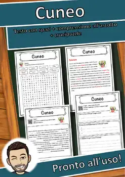
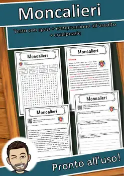
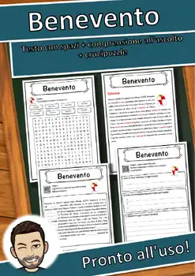
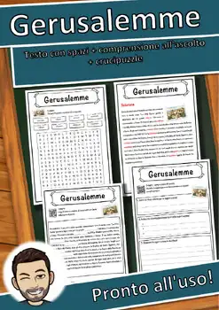
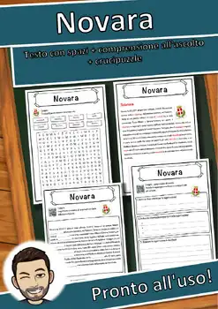
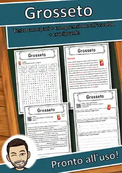
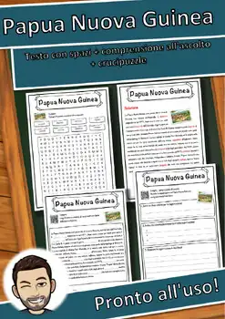

Ville de maisons de l’Avent – Bricolage, calendrier, gabarits, 1re-4e année
🏠✨ Votre classe construit son propre calendrier de l’Avent! Chaque élève plie un petit chapeau… pardon, une petite maison : toit à pignon, porte à rabat et numéro de maison. Ensemble, les 24 maisons forment une ville lumineuse sur le rebord de la fenêtre. Le plancher de chaque maison s’ouvre, et une activité de l’Avent attend les élèves chaque jour.
Idéal pour décembre en classe d’immersion française, en classe francophone, en arts plastiques ou en mathématiques (géométrie).
📦 CONTENU (19 pages PDF + page couverture)
- Notes pour l’enseignante ou l’enseignant : déroulement (environ 100 minutes), différenciation, plan de photocopie et liens avec le programme
- Aperçu du projet avec photo modèle
- Instructions de bricolage en 6 étapes illustrées, avec bande « Je suis capable de… »
- 6 façades de maisons (maison à colombages, boulangerie, hôtel de ville avec horloge, maison des étoiles, maison en pain d’épices, maison d’hiver) aux niveaux ★ et ★★, 2 maisons par page
- Gabarit ★★★ pour créer sa propre maison
- Numéros de maison de 1 à 24
- 24 cartes d’activités de l’Avent : participer, résoudre des énigmes, bouger, lire, écrire
- Texte de lecture « La ville de maisons de l’Avent » avec 3 tâches (vrai ou faux, répondre aux questions, inventer sa propre activité)
- Coloriage par calcul à 3 niveaux (jusqu’à 20, jusqu’à 100, tables de multiplication), pour les élèves qui terminent plus vite
- Coloriage : mandala de l’Avent avec défi de dénombrement
- Corrigé
🌟 TROIS NIVEAUX DE DIFFÉRENCIATION
★ Façade déjà dessinée, grandes zones à colorier, traits épais
★★ Façade riche en détails (poutres, tuiles, horloge, décorations en pain d’épices)
★★★ Maison vierge : l’élève conçoit lui-même ses fenêtres et ses motifs
Chaque élève travaille à son rythme, et la ville finale reste harmonieuse.
🎯 OBJECTIFS D’APPRENTISSAGE
- Plier, coller et assembler un objet en trois dimensions à partir d’un patron
- Suivre des consignes écrites et illustrées pour réaliser un bricolage
- Observer des formes géométriques (rectangles, triangles, prismes) et les reconnaître dans un patron
- Créer une image personnelle avec des motifs, des couleurs et des formes
- Lire un court texte informatif et répondre à des questions
- S’exercer au calcul (nombres jusqu’à 20 et 100, tables de multiplication) et au dénombrement
- Participer à un projet de classe coopératif
📚 LIENS AVEC LES PROGRAMMES
PFEQ (Québec), 1er et 2e cycles du primaire :
- Arts plastiques : créer des images personnelles et médiatiques,
Similar resources

Cuneo – Scheda: testo con spazi vuoti, comprensione all'ascolto e crucipuzzle

Moncalieri – Scheda: testo con spazi vuoti, ascolto e crucipuzzle
Eruzione vulcanica – Italian Reading Comprehension Worksheet (Scheda didattica)

Benevento – Scheda: testo con spazi vuoti, ascolto e crucipuzzle

Gerusalemme – Italian Reading Comprehension Worksheet (Scheda didattica)

Novara – Scheda: testo con spazi vuoti, comprensione all'ascolto e crucipuzzle

Grosseto – Scheda: testo con spazi vuoti, comprensione all'ascolto e crucipuzzle
